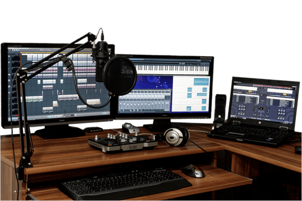
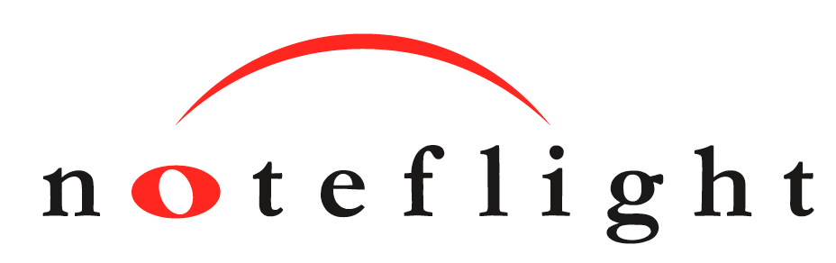

No limits to creativity
What is Creativity?
Well that really depends on who you ask. For me, creativity is when you can take an idea, and make a masterpiece. While most people's creative ideas are created from a paintbrush and canvas, mine come from computers and midi keybords.
Music has been a really big part of my life since day one, so it's no surprise to others that I started writing music. Growing up, my mom had the biggest infuence on what I listen to today, which is mainly rock and electronic music.
Turning an Idea Into Something Better
When I first wanted to write music, I was inspired by a piano cover of one of my favorite songs at the time. After searching and searching for a way to write sheet music online, I found Noteflight. It's a completey free (with some limitations) website, where all your projects are saved to the cloud, which means you can work on your projects on any computer without needing to save anything to a jump drive.
